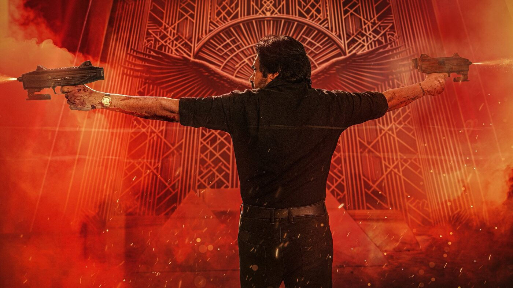

01THE SHOWNOW RUNNING
The feature, as it plays
Entrance, stills, sound and trailer, in the order they arrive in the dark. Nothing here is a poster with text on it — every frame is what our projector throws.
NOW SHOWING · HOLOCAUST · ARUSH CINEPLEX, MADHUBAN


Some storms
never leave.
They wait.
ARUSH CINEPLEX · STATION ROAD · MADHUBAN, BIHAR
The first half is the current show — Holocaust — the way the house wants it seen: stills struck from our own screen, the sound, the trailer, the interval. The second half is the hall: what the building actually is, the week's schedule, what a ticket costs at the counter, how the house runs, and the walk from the station.
Entrance, stills, sound and trailer, in the order they arrive in the dark. Nothing here is a poster with text on it — every frame is what our projector throws.
One auditorium, two decks, a nine metre frame and a 4K lamp we keep honest. What the seats are, what the room does at interval, what it costs to sit in it.
Show times for the whole week, prices, house rules, and how to find us. The counter takes cash. There is no online booking yet — this page is the closest thing to it.
SILENCE HAS AN EXPIRY DATE.
A world of shadows.
A name that echoes through it.
A WORLD IN FRAGMENTS
Arush Cineplex is a single-auditorium hall on Station Road in Madhuban. One projector, one curtain, two decks. We run one film at a time and we run it the way it was mixed — the lamp is calibrated on Mondays, the sound is checked before the first show, and nobody is allowed to walk the aisle once the feature starts.
Every show is the same film. The evening show on Friday, Saturday and Sunday is the one that fills — if the board says HOUSE FULL, the counter will still sell the next slot, and it will tell you honestly which one.
Half the tickets are sold before the first show — the morning house is the cheap one and the quarter-day crowd knows it. If you want the middle of the stall on the evening show, come an hour early, not ten minutes.
Arush Cineplex sits on Station Road in Madhuban, opposite the bus stand, four hundred metres from the railway station. The marquee faces the road and the queue for the evening show spills onto the footpath — follow it. Auto-rickshaws from the station will quote you twenty rupees for a three-minute drive and that is roughly right.
Official promotional film. Sound and playback controls are available in the player.
Open official film on YouTube